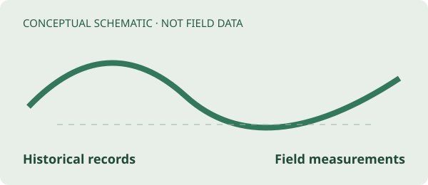
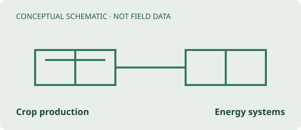

I studied Agricultural Engineering at
the Institute of Engineering, Tribhuvan
University (2022–2026), with a merit-based
full scholarship.
My undergraduate research explored
biodegradable cushioning composites made
from jute stem waste. I have worked on
hydrological field surveys and drip
irrigation design and installation.
Current work:
Agricultural Engineering Intern at
Institute of Himalayan Risk Reduction
02 / SELECTED WORK
Research & Field Projects
Selected case studies drawn from my research,
fieldwork and scientific publications.
Bright Future Apple Farm, Solukhumbu.
CASE 01 / DRIP IRRIGATION
3,500+ Apple Plants Covered
Problem
Water delivery for a hill-region
apple farm.
Approach
Drip irrigation system design
and field installation.
My Role
Designed and installed the system
during my internship at Nepal
Thopo Sinchai.
Results
Covered 20 ropani of agricultural
land with more than 3,500 apple plants.
Takeaway
Field-scale irrigation design
connects engineering with practical
farm operations.

Conceptual research diagram.
CASE 02 / WATERSHED HYDROLOGY
Three Decades of Flood Impacts Reviewed
Problem
Understanding long-term river
dynamics and flood risk in
Kathmandu Valley.
Approach
Literature review, historical
hydrological data analysis,
groundwater measurements and
geospatial surveys.
My Role
Conducted hydrological field surveys,
stream discharge measurements using
SonTek FlowTracker2 ADV, and evaluated
mobile discharge measurement
applications.
Results
Reviewed three decades of
historical flood impacts.
Takeaway
Field observations and historical
records complement watershed
assessment.
Conceptual experimental framework.
CASE 03 / SUSTAINABLE MATERIALS
Jute Stem Waste-Based Cushioning Composites
Problem
Agricultural residue utilization
and environmental concerns associated
with conventional expanded polystyrene
packaging.
Approach
Laboratory-scale fabrication of
jute stem residue composites using
corn flour as a bio-based binder,
with three experimental formulations.
My Role
Composite formulation, manufacturing
parameter optimization, laboratory
testing and statistical analysis.
Experimental Framework
Three formulations, composite panels
measuring 150 × 150 × 25 mm, and a
90-day soil-burial biodegradation
assessment framework.
Final quantitative performance
results are not reported here.
Takeaway
Agricultural biomass can be
investigated as a resource for
circular material systems.

Conceptual crop-energy integration diagram.
CASE 04 / CROP–ENERGY SYSTEMS
AI-Driven Crop–Energy Co-production
Problem
Integration of agricultural
production and renewable energy
systems.
Approach
Systematic review of artificial
intelligence-driven optimization
in agrophotovoltaic and bioenergy-
integrated production systems.
My Role
Co-author of the published
systematic review.
Results
Published in Economic Growth and
Environment Sustainability,
Volume 5, Issue 2, pages 69–74.
Takeaway
Crop-energy integration connects
agricultural engineering with
renewable energy research.
How can irrigation and nutrient management
be designed to support soil health and
productive cropping systems while responding
to changing water availability?
I would like to investigate field
measurements, hydrological data and
geospatial assessment as complementary
methods for understanding agricultural
water and watershed systems.
Another research direction is the
valorization of agricultural biomass
through circular material and energy
systems. This includes evaluating resource
efficiency, material performance and the
role of farmer engagement and social
inclusion in adopting sustainable
agricultural practices.
04 / ACADEMIC AND PROFESSIONAL BACKGROUND
Experience & Education
Agricultural Engineering Intern
Nepal Thopo Sinchai · Chitwan
Drip irrigation installation,
agricultural plastics production
supervision, greenhouse design
and solar dryer cost estimation.
Research Intern
Smartphone4water Nepal · Lalitpur
River-system literature review,
hydrological surveys, groundwater
measurements and stream discharge
assessment.
Undergraduate Research Assistant
Department of Agricultural Engineering,
Institute of Engineering · Dharan
Jute composite formulation,
laboratory experimentation,
statistical analysis and
scientific reporting.
Local Director
IAAS Nepal LC ERC
Chapter coordination, workshops,
seminars and agricultural
outreach programmes.
Executive Member
Nepal Agricultural Engineering
Student Society (NAESS)
Technical events, workshops
and student engagement.
B.E. Agricultural Engineering
Institute of Engineering,
Tribhuvan University · Dharan
Merit-based full scholarship,
2022–2026.
Higher Secondary Education
(Science)
Premier College · Kathmandu
05 / SCHOLARLY OUTPUT
Publications & Presentations
JOURNAL ARTICLE / 2026
Pandey, A., Bhattarai, D., Karna, D.,
& Bista, E. (2026).
Artificial intelligence-driven optimization
of agrophotovoltaic and bioenergy-integrated
crop–energy co-production systems:
A systematic review.
Economic Growth and Environment
Sustainability (EGNES), 5
(2), 69–74.
Pandey, A. (2026).
Utilization of crop residue for renewable
energy production and circular economy in
agriculture: A case study in Sunsari
District.
International Conference on Agricultural
Engineering and Climate Smart Agriculture,
NSAE, Kathmandu.
International Conference on Agricultural
Engineering and Climate Smart Agriculture,
Kathmandu, 5–6 February 2026.
BACHELOR'S THESIS
Development and Feasibility Evaluation
of Jute Stem Waste-Based Cushioning Composite
for Eco-Packaging Applications.
Undergraduate research · Experimental
methodology and feasibility framework.
06 / RESEARCH METHODS
Technical Skills
Water & Geospatial Engineering
SonTek FlowTracker2 ADV,
groundwater measurements and
geospatial data collection.
Drip irrigation design and estimation
— Solukhumbu apple farm.
GIS and remote sensing for
watershed assessment.
Materials & Experimentation
Experimental design, composite
formulation, mechanical testing,
density and water absorption
assessment.
Impact resistance, biodegradability,
UTM and compression testing.
Data Analysis & Communication
Statistical analysis, literature
review and hydrological data
interpretation.
R, Microsoft Excel, ANOVA,
regression and data visualization.
Scientific writing and conference
presentations.
Professional Training
R for Data Science — Cognitive Class
Fundamentals of Remote Sensing
— NASA ARSET
Fundamentals of Research Methodology
— IOE Purwanchal Campus
07 / CONNECT
Get in Touch
For research collaboration, academic and
professional inquiries, reach me by email.